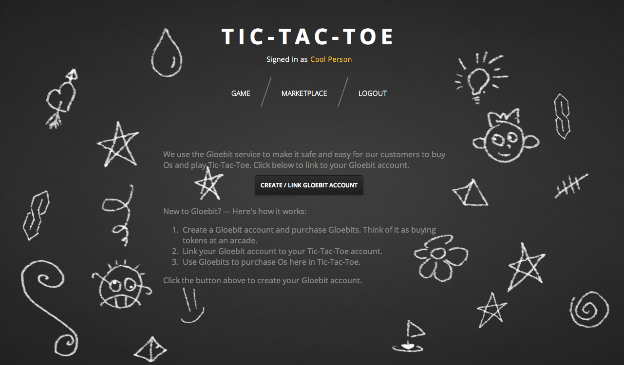
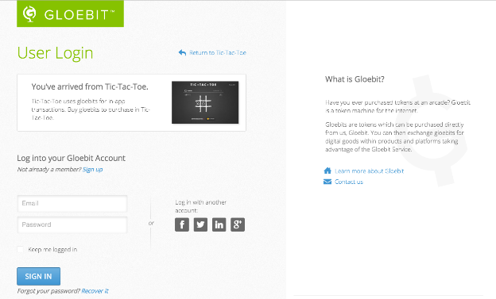
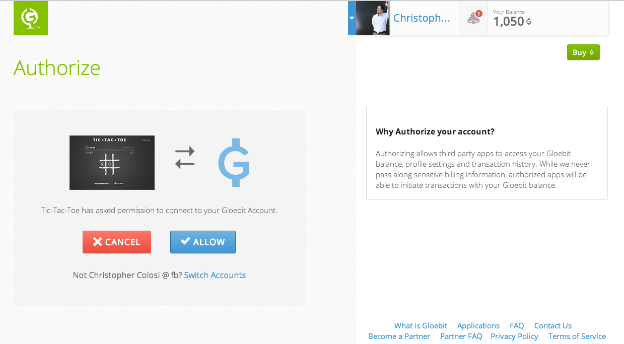
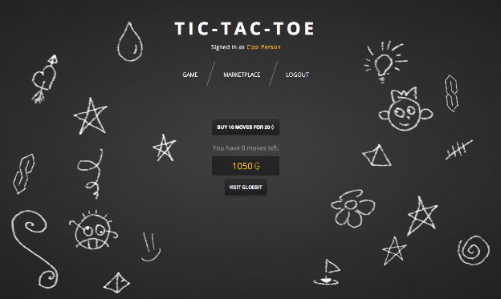

At some point prior to your application accessing Gloebit services for one of your customer's account, the application must request authorization from the customer. Your application can invoke the authorization flow anytime before first accessing a Gloebit service, for example at application startup or the first time the user's action trigger the need for a Gloebit service, such as purchasing a product.
The following shows an example experience of an application user being guided through the Gloebit authorization flow.
First, the application informs the user that it uses Gloebit services and that the user must authorize access to the user's Gloebit account:
In the Tic-Tac-Toe application, when the user clicks on the "CREATE/LINK GLOEBIT ACCOUNT" button, the application redirects the user to the Gloebit authorization service endpoint. The service first checks if the user is already logged in to Gloebit. If not, the authorization services redirects the user to the User Login page with trackback imagery for the Tic-Tac-Toe application:
After the user logs in, or if the user was already logged in, the Gloebit authorization service redirects the user to the Authorize page with trackback imagery for Tic-Tac-Toe. This page asks the user to allow Tic-Tac-Toe access to the user's Gloebit account:
After the user clicks Allow, the Gloebit authorization service grants an access token to the Tic-Tac-Toe application and redirects the user back to the application. At this point, the user has successfully authorized the Tic-Tac-Toe application, and the application can use the Gloebit services. The application uses the token to access the Gloebit Identity and Gloebit Digital Currency services and gather user account information, and then it presents its purchase page to the user:
For more details about authorization, please see the Authorization section of the Gloebit Services Overview page and the Authorize section of the Gloebit Services API Details page.